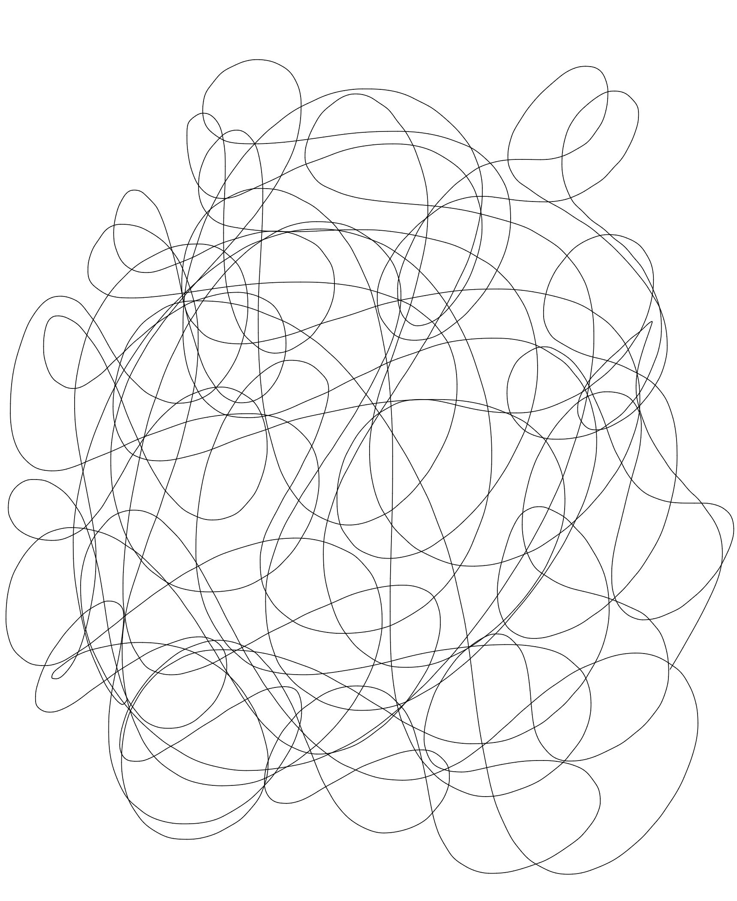

Minimalist digital art exploring emotion through line, form, stillness and movement.

2025
Digital drawing
A minimalist exploration of emotion, movement, and form.
2026
Digital motion artwork
Repeating lines circle, overlap and drift without resolution, reflecting the restless movement of thought.